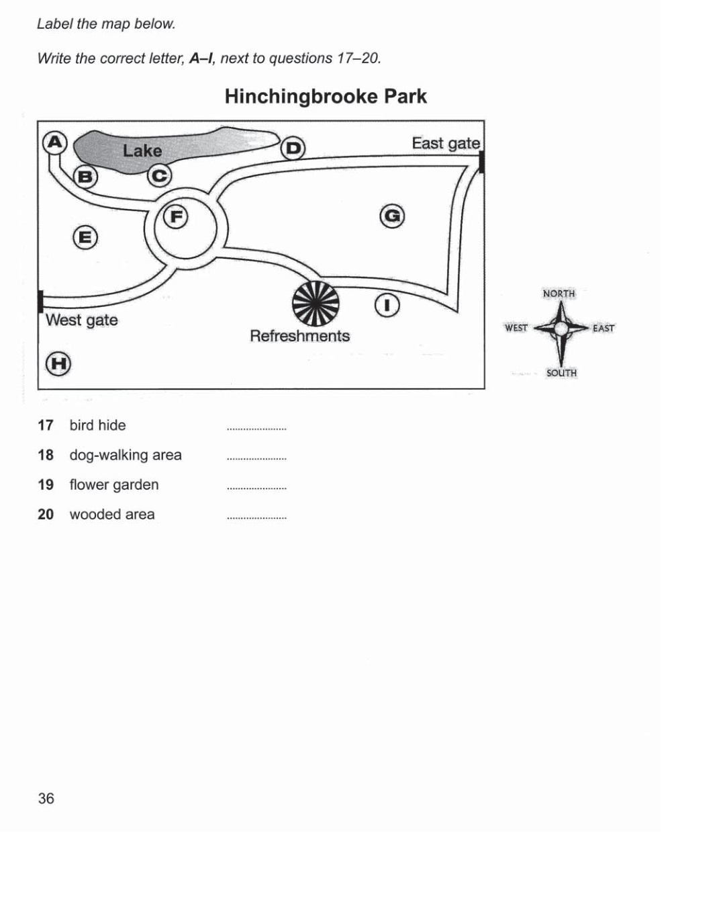

Cambridge IELTS 9
Time: approx. 30 minutes
Instructions
Digital recreation of Cambridge IELTS Listening Test 2.
Type answers in the gaps. Click options for multiple choice.
Print this page for paper-like practice.
Complete the form below. Write ONE WORD AND/OR A NUMBER for each answer.
Questions 11–13: Complete the table. Questions 14–16: Choose A, B or C. Questions 17–20: Label the map A–I.
Questions 11 – 13
Complete the table below. Write NO MORE THAN THREE WORDS for each answer.
| Name of place | Of particular interest | Open |
|---|---|---|
Halland Common |
source of River Ouse |
24 hours |
Holt Island |
many different11 |
between12and Sunday |
Longfield Country Park |
reconstruction of a 2,000-year-old13with activities for children |
daylight hours |

Questions 21–24: Choose A, B or C. Questions 25–30: Complete the notes (NO MORE THAN TWO WORDS).
Complete the notes below. Write ONE WORD ONLY for each answer.
IELTS Listening Test 2 • Cambridge IELTS 9 • Practice recreation (content from official PDF)